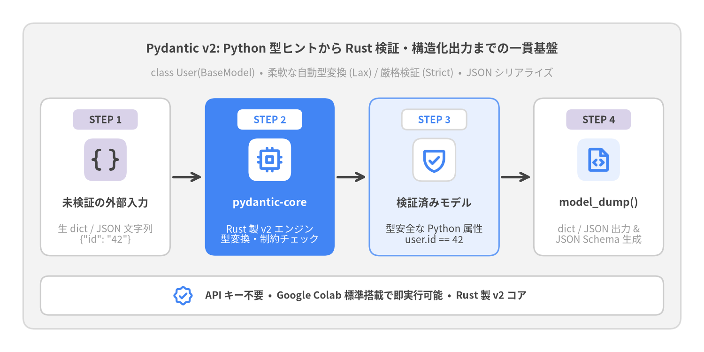
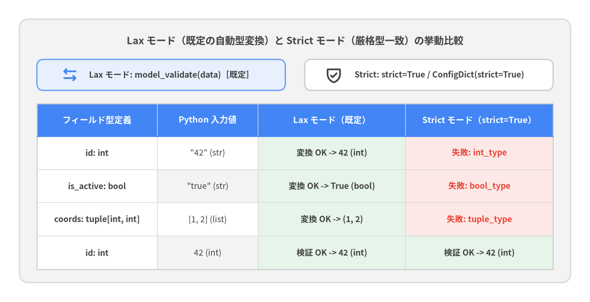

01. BaseModel の基本と型変換（Lax vs. Strict モード）
Pydantic v2 は、Python 標準の型ヒント（class User(BaseModel):）を Rust 製の高速コアエンジン pydantic-core による型検証・シリアライズパイプラインへと変換します。pydantic v2 は Google Colab に標準でプリインストールされており、API キーや外部サービス設定も一切不要なため、本クックブックのすべてのコードセルをそのまま即座に実行できます。

View Drawlib Python Code
from drawlib.canvas import save, setup
from drawlib.icons import phosphor
from drawlib.lines import line
from drawlib.shapes import rectangle
from drawlib.styles import Colors, Styles
from drawlib.text import text
setup(width=152, height=76, dpi=150)
# 外枠のニュートラルフレーム（50%以上を無彩色・淡色ベースで構成）
rectangle(
(76.0, 38.0),
width=142.0,
height=66.0,
style=Styles.Neutral.patch(shape_r=2.5, shape_fill_color=Colors.Light, shape_line_color=Colors.Gray3),
)
# ヘッダータイトル・サブタイトル
text(
(76.0, 65.5),
"Pydantic v2: Python 型ヒントから Rust 検証・構造化出力までの一貫基盤",
style=Styles.DarkBold.patch(text_size=12.4),
)
text(
(76.0, 60.3),
"class User(BaseModel) • 柔軟な自動型変換 (Lax) / 厳格検証 (Strict) • JSON シリアライズ",
style=Styles.Muted.patch(text_size=10.2),
)
# 4段階のステージカード: width=28.0, gap=7.5 (x = 8.75..143.25)
card_w = 28.0
card_h = 34.0
cy = 37.8
cxs = [22.75, 58.25, 93.75, 129.25]
neutral_card = Styles.White.patch(shape_r=2.2, shape_line_color=Colors.Gray4)
soft_card = Styles.PrimaryNeutral.patch(shape_r=2.2)
hero_card = Styles.PrimaryFlat.patch(shape_r=2.2)
# Stage 1: 未検証の外部入力 (dict / JSON 文字列)
rectangle((cxs[0], cy), width=card_w, height=card_h, style=neutral_card)
rectangle((cxs[0], 50.2), width=14.0, height=4.4, style=Styles.SecondaryNeutral.patch(shape_r=1.2, shape_line_width=0))
text((cxs[0], 50.2), "STEP 1", style=Styles.DarkBold.patch(text_size=10.0))
rectangle((cxs[0], 41.5), width=9.2, height=9.2, style=Styles.SecondaryNeutral.patch(shape_r=2.0, shape_line_width=0))
phosphor.brackets_curly((cxs[0], 41.5), width=6.0, style=Styles.DarkBold)
text((cxs[0], 32.3), "未検証の外部入力", style=Styles.DarkBold.patch(text_size=10.8))
text((cxs[0], 25.5), '生 dict / JSON 文字列\n{"id": "42"}', style=Styles.Muted.patch(text_size=10.0))
# Stage 2: pydantic-core エンジン（主役の PrimaryFlat カード）
rectangle((cxs[1], cy), width=card_w, height=card_h, style=hero_card)
rectangle((cxs[1], 50.2), width=14.0, height=4.4, style=Styles.White.patch(shape_r=1.2, shape_line_width=0))
text((cxs[1], 50.2), "STEP 2", style=Styles.PrimaryBold.patch(text_size=10.0))
rectangle((cxs[1], 41.5), width=9.2, height=9.2, style=Styles.White.patch(shape_r=2.0, shape_line_width=0))
phosphor.cpu((cxs[1], 41.5), width=6.0, style=Styles.PrimaryBold)
text((cxs[1], 32.3), "pydantic-core", style=Styles.WhiteBold.patch(text_size=11.2))
text((cxs[1], 25.5), "Rust 製 v2 エンジン\n型変換・制約チェック", style=Styles.White.patch(text_size=10.0))
# Stage 3: 検証済み BaseModel（型安全な Python 属性）
rectangle((cxs[2], cy), width=card_w, height=card_h, style=soft_card)
rectangle((cxs[2], 50.2), width=14.0, height=4.4, style=Styles.White.patch(shape_r=1.2, shape_line_color=Colors.Gray3))
text((cxs[2], 50.2), "STEP 3", style=Styles.PrimaryBold.patch(text_size=10.0))
rectangle((cxs[2], 41.5), width=9.2, height=9.2, style=Styles.White.patch(shape_r=2.0, shape_line_color=Colors.Gray3))
phosphor.shield_check((cxs[2], 41.5), width=6.0, style=Styles.PrimaryBold)
text((cxs[2], 32.3), "検証済みモデル", style=Styles.DarkBold.patch(text_size=10.8))
text((cxs[2], 25.5), "型安全な Python 属性\nuser.id == 42", style=Styles.Dark.patch(text_size=10.0))
# Stage 4: model_dump() / JSON & JSON Schema
rectangle((cxs[3], cy), width=card_w, height=card_h, style=neutral_card)
rectangle((cxs[3], 50.2), width=14.0, height=4.4, style=Styles.SecondaryNeutral.patch(shape_r=1.2, shape_line_width=0))
text((cxs[3], 50.2), "STEP 4", style=Styles.DarkBold.patch(text_size=10.0))
rectangle((cxs[3], 41.5), width=9.2, height=9.2, style=Styles.PrimaryNeutral.patch(shape_r=2.0, shape_line_width=0))
phosphor.file_code((cxs[3], 41.5), width=6.0, style=Styles.PrimaryBold)
text((cxs[3], 32.3), "model_dump()", style=Styles.DarkBold.patch(text_size=11.0))
text((cxs[3], 25.5), "dict / JSON 出力 &\nJSON Schema 生成", style=Styles.Muted.patch(text_size=10.0))
# ステージ間の水平コネクタ（カード間隔 7.5 ユニット）
for idx in range(3):
x_start = cxs[idx] + card_w / 2.0 + 0.6
x_end = cxs[idx + 1] - card_w / 2.0 - 0.6
line((x_start, cy), (x_end, cy), arrow_head="->", style=Styles.DarkBold)
# 下部サマリーバナー
rectangle(
(76.0, 12.2),
width=134.5,
height=8.4,
style=Styles.White.patch(shape_r=1.8, shape_line_color=Colors.Gray4),
)
phosphor.seal_check((39.5, 12.2), width=4.6, style=Styles.PrimaryBold)
text(
(79.0, 12.2),
"API キー不要 • Google Colab 標準搭載で即実行可能 • Rust 製 v2 コア",
style=Styles.DarkBold.patch(text_size=10.2),
)
save()
1. 最初の BaseModel と自動型変換（Lax モード）
Pydantic v2 でデータスキーマを定義するには、BaseModel を継承して Python 標準の型アノテーション（int, str, bool, list[str]）を記述するだけです。既定の Lax モード（柔軟モード） では、URL クエリ文字列やフォーム送信、外部 JSON ペイロードから "42" や "true" といった文字列が渡されても、pydantic-core が互換性のある値をネイティブの int や bool へ安全に変換し、実行時の型安全性を保証します。
!pip install -q pydantic
from pydantic import BaseModel
class User(BaseModel):
id: int
name: str
is_active: bool = True
tags: list[str] = []
user = User(id="42", name="Alice", is_active="true", tags=["admin", "colab"])
print(user)
print("type(user.id):", type(user.id), "| is_active:", user.is_active)
print("model_dump():", user.model_dump())
id=42 name='Alice' is_active=True tags=['admin', 'colab']
type(user.id): <class 'int'> | is_active: True
model_dump(): {'id': 42, 'name': 'Alice', 'is_active': True, 'tags': ['admin', 'colab']}
また Pydantic v2 では、旧 v1 のメソッド名（parse_obj, parse_raw, dict, json）が非推奨となり、model_* プレフィックスの統一メソッドへ刷新されています。
Model.model_validate(obj)(旧 v1:parse_obj): Python のdictやオブジェクトを検証し、型付きのBaseModelインスタンスを生成します。Model.model_validate_json(data)(旧 v1:parse_raw): 生の UTF-8 JSON 文字列（またはbytes）を Python のjson.loads()を介さず Rust 内部（jiter）で一括パース＆検証するため、高速に動作します。instance.model_dump()/instance.model_dump_json()(旧 v1:dict()/json()): 検証済みモデルを Python のdictまたは整形済み JSON 文字列へシリアライズします。
raw_json = '{"id": "108", "name": "Bob", "tags": ["data", "rust"]}'
bob = User.model_validate_json(raw_json)
print("Validated from JSON:", bob)
print(bob.model_dump_json(indent=2))
Validated from JSON: id=108 name='Bob' is_active=True tags=['data', 'rust']
{
"id": 108,
"name": "Bob",
"is_active": true,
"tags": [
"data",
"rust"
]
}
2. Lax モードと Strict モードの使い分け（ConfigDict(strict=True)）
外部入力を受け取る境界層（HTTP クエリパラメータ、環境変数、CSV 取り込みなど）では自動型変換を行う Lax モード が便利ですが、マイクロサービス間の内部契約や決済・金融データ処理では、"42" を暗黙的に 42 へ変換せず型不一致バグとして即座に弾きたい場面があります。
Pydantic v2 では、呼び出し単位（strict=True 引数）または モデル全体（model_config = ConfigDict(strict=True)）で Strict モード（厳格モード） を有効化できます。
- Lax モード（既定）:
"42"→42、"true"→True、[1, 2]→(1, 2)のように解釈可能な入力を自動変換しつつ、"forty-two"のような変換不能な値は確実に拒否します。 - Strict モード（
strict=True）: Python オブジェクト検証時に厳密な型一致を要求します（intに対する"42"はint_type、boolに対する"true"はbool_type、tuple[int, int]に対する[1, 2]はtuple_typeエラーとなります）。

View Drawlib Python Code
from drawlib.canvas import save, setup
from drawlib.icons import phosphor
from drawlib.shapes import rectangle
from drawlib.smartarts import Table
from drawlib.styles import Colors, Styles
from drawlib.text import text
setup(width=152, height=78, dpi=150)
# 外枠のニュートラルフレーム（50%以上を無彩色・淡色ベースで構成）
rectangle(
(76.0, 39.0),
width=142.0,
height=68.0,
style=Styles.Neutral.patch(shape_r=2.5, shape_fill_color=Colors.Light, shape_line_color=Colors.Gray3),
)
# ヘッダータイトル
text(
(76.0, 67.5),
"Lax モード（既定の自動型変換）と Strict モード（厳格型一致）の挙動比較",
style=Styles.DarkBold.patch(text_size=12.2),
)
# モード概要バッジ（下のテーブル幅 x = 9.5..142.5 に整列）
rectangle((41.5, 58.6), width=64.0, height=8.0, style=Styles.PrimaryNeutral.patch(shape_r=1.8))
phosphor.arrows_left_right((18.0, 58.6), width=4.5, style=Styles.PrimaryBold)
text((44.2, 58.6), "Lax モード: model_validate(data)［既定］", style=Styles.DarkBold.patch(text_size=10.0))
rectangle((110.5, 58.6), width=64.0, height=8.0, style=Styles.White.patch(shape_r=1.8, shape_line_color=Colors.Gray4))
phosphor.shield_check((86.0, 58.6), width=4.5, style=Styles.DarkBold)
text((113.2, 58.6), "Strict: strict=True / ConfigDict(strict=True)", style=Styles.DarkBold.patch(text_size=10.0))
# 比較テーブル（左上アンカー xy=(9.5, 51.2), 合計幅=133.0, 合計高さ=42.8）
table = Table(
cell_style=Styles.White,
text_style=Styles.Dark.patch(text_size=10.0),
header_cell_style=Styles.PrimaryFlat,
header_text_style=Styles.WhiteBold.patch(text_size=10.4),
border_style=Styles.MutedThin,
)
table.set_style_cell_evenodd(
even_color=Colors.Light,
even_text_style=Styles.Dark.patch(text_size=10.0),
odd_color=Colors.White,
odd_text_style=Styles.Dark.patch(text_size=10.0),
)
table.set_style_cell(
background_color=Colors.White,
text_style=Styles.DarkBold.patch(text_size=10.0),
rows=[1, 2, 3, 4],
columns=[0],
)
table.set_style_cell(
background_color=Colors.SuccessNeutral,
text_style=Styles.DarkBold.patch(text_size=10.0),
rows=[1, 2, 3, 4],
columns=[2],
)
table.set_style_cell(
background_color=Colors.DangerNeutral,
text_style=Styles.DangerBold.patch(text_size=10.0),
rows=[1, 2, 3],
columns=[3],
)
table.set_style_cell(
background_color=Colors.SuccessNeutral,
text_style=Styles.DarkBold.patch(text_size=10.0),
rows=[4],
columns=[3],
)
# ヘッダー行（row 0）が上書きされないよう最後に再適用
table.set_style_cell_header(
background_color=Colors.Primary,
text_style=Styles.WhiteBold.patch(text_size=10.4),
)
table.set_style_border(
top=Styles.Primary.patch(line_color=Colors.Gray4, line_width=1.2),
top2=Styles.Primary.patch(line_color=Colors.Primary, line_width=1.2),
bottom=Styles.Primary.patch(line_color=Colors.Gray4, line_width=1.2),
left=Styles.Primary.patch(line_color=Colors.Gray4, line_width=1.2),
right=Styles.Primary.patch(line_color=Colors.Gray4, line_width=1.2),
between_columns=Styles.Primary.patch(line_color=Colors.Gray3, line_width=0.8),
between_rows=Styles.Primary.patch(line_color=Colors.Gray3, line_width=0.8),
)
comparison_data = [
["フィールド型定義", "Python 入力値", "Lax モード（既定）", "Strict モード（strict=True）"],
["id: int", '"42" (str)', "変換 OK -> 42 (int)", "失敗: int_type"],
["is_active: bool", '"true" (str)', "変換 OK -> True (bool)", "失敗: bool_type"],
["coords: tuple[int, int]", "[1, 2] (list)", "変換 OK -> (1, 2)", "失敗: tuple_type"],
["id: int", "42 (int)", "検証 OK -> 42 (int)", "検証 OK -> 42 (int)"],
]
table.draw_flexible(
xy=(9.5, 51.2),
column_widths=[31.0, 26.0, 38.0, 38.0],
row_heights=[8.4, 8.6, 8.6, 8.6, 8.6],
data=comparison_data,
align="top_left",
)
save()
先ほど定義した User モデルを使って、既定の Lax モードと呼び出し単位の strict=True、さらに ConfigDict(strict=True) によるモデル単位の厳格検証を実際に比較してみましょう。
from pydantic import ConfigDict, ValidationError
payload = {"id": "42", "name": "Alice"}
# 1. 既定の Lax モード: 文字列 "42" を int の 42 へ自動変換
lax_user = User.model_validate(payload)
print("Lax mode succeeded:", repr(lax_user))
# 2. 呼び出し単位の Strict モード: int に対する文字列 "42" を拒否
try:
User.model_validate(payload, strict=True)
except ValidationError as e:
print("\nStrict mode raised ValidationError:")
print(e)
# 3. ConfigDict(strict=True) によるモデル全体の Strict モード化
class StrictPoint(BaseModel):
model_config = ConfigDict(strict=True)
label: str
coords: tuple[int, int]
point = StrictPoint(label="origin", coords=(0, 0))
print("\nStrictPoint exact match:", repr(point))
Lax mode succeeded: User(id=42, name='Alice', is_active=True, tags=[])
Strict mode raised ValidationError:
1 validation error for User
id
Input should be a valid integer [type=int_type, input_value='42', input_type=str]
For further information visit https://errors.pydantic.dev/2.14/v/int_type
StrictPoint exact match: StrictPoint(label='origin', coords=(0, 0))
ValidationError の出力には、違反したフィールド名（id）、分かりやすいエラーメッセージ（Input should be a valid integer）、エラー種別コード（type=int_type）、実際に入力された値（input_value='42'）が正確に記録されます。なお JSON にはタプル構文が存在しないため、StrictPoint.model_validate_json('{"label": "origin", "coords": [0, 0]}') のように JSON 文字列を直接検証する場合は、Strict モードでも JSON 配列 [0, 0] が tuple[int, int] として受理されます。
まとめと次のステップ
BaseModelと v2 標準model_*メソッド: Python 標準の型ヒントを宣言するだけで、model_validate()/model_validate_json()による Rust 高速検証とmodel_dump()/model_dump_json()による出力を一貫して扱えます。- 次章（Chapter 02）のプレビュー: 続く第2章では、
Field(...)による数値範囲・文字列パターン制約や安全なdefault_factoryの定義方法と、複数フィールドにわたるValidationError（e.errors()）の構造的な解析手法を学びます。